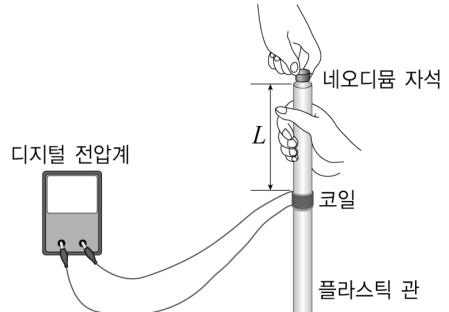
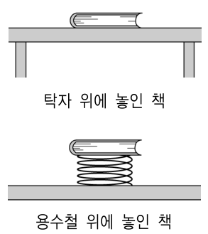

교육론 객관식 4문항 — 탐구 변인·과학의 본성·인지적 다리·과학철학Variables and creativity · nature of science (Millikan) · bridging analogy · ad hoc and bold hypotheses
다음은 실험 안내서이다.
[실험 목표] 자속의 변화율에 따라 유도 기전력이 어떻게 달라지는지 설명할 수 있다.
[준비물] 플라스틱 관, 코일, 전선, 디지털 전압계, 네오디뮴 자석, 자
[실험 과정] (가) 그림과 같이 코일을 끼운 플라스틱 관을 수직으로 세우고, 플라스틱 관 입구에서 코일까지의 거리 \(L\)을 측정한다.

(나) 플라스틱 관 입구에서 자석을 떨어뜨리고 코일에 연결된 디지털 전압계에 나타나는 최대 전압 \(V\)를 측정한다.
(다) \(L\)을 변화시켜 가면서 (나)의 과정을 반복한다.
(라) 측정 결과를 그래프로 나타낸다.
(마) 그래프로부터 결론을 도출한다.
[정리 및 창의적으로 생각해 보기] (1) <생략> (2) 위 상황을 이용해 추가로 탐구해 볼 수 있는 다양한 탐구 문제를 가능한 많이 제안해 본다.
이 실험 안내서의 내용에 대한 설명으로 옳은 것만을 <보기>에서 모두 고른 것은?
- ㄱ. 플라스틱 관을 구리 관으로 바꾸어 위와 동일한 실험을 하는 것이 [실험 목표]를 달성하는 데 더 적합하다.
- ㄴ. 이 실험에서 \(V\)는 독립변인이고, \(L\)은 조작변인이다.
- ㄷ. [정리 및 창의적으로 생각해 보기] (2)활동에는 창의적 사고의 ‘융통성’과 ‘유창성’이 포함된다.
다음은 [과학사 사례]와 [과학의 본성과 관련된 내용]의 일부이다.
[과학사 사례]
(가) 1909년 플레처는 박사 논문 주제를 정하기 위하여 밀리칸의 실험실을 찾았다. 그 당시 밀리칸은 물방울을 이용하여 전하량을 측정하는 실험을 수행하고 있었는데, 물방울은 증발이 빠르기 때문에 2초 동안만 관찰할 수 있었다. 이 문제를 해결하기 위하여 밀리칸, 플레처, 베게만이 함께 논의하여 물방울 대신 기름방울을 사용하기로 하였고 실험이 성공적으로 이루어졌다.
(나) 플레처는 밀리칸과 협의하여 기름방울 실험을 박사 논문 주제로 정한 후 분무기와 시계용 기름을 이용한 간단한 실험 장치를 고안하였다. 이 장치를 이용하여 단 하루 만에 비교적 정확한 전하량을 측정하였다. 밀리칸은 기계공을 불러 플레처의 실험 장치를 바탕으로 정밀한 실험 장치를 제작하였다. 이후 밀리칸과 플레처는 실험실에서 2년간 함께 실험하여 성공적인 결과를 얻었다.
(다) 밀리칸과 플레처의 연구결과는 모두 다섯 편의 논문으로 정리되었다. 플레처는 논문이 자신과 밀리칸의 공저로 발표될 것으로 생각하고 있었다. 그러나 밀리칸이 첫 번째 논문을 단독으로 발표하고 싶어하였다. 플레처는 내키지 않았지만 이에 동의하였다. 그래서 첫 번째 논문은 1910년 밀리칸 단독 논문으로 발표되었고, 나머지 네 편 중 두 편은 밀리칸과 플레처의 공저로, 두 편은 플레처 단독으로 발표되었다. 밀리칸이 1910년 단독으로 발표한 첫 번째 논문은 밀리칸이 1923년 노벨물리학상을 수상하는 데 기여하였다.
[과학의 본성과 관련된 내용]
A. 과학자는 윤리적으로 바람직한 태도를 갖추어야 한다.
B. 과학은 여러 과학자 사이의 협력에 의해 발전된다.
C. 과학 지식은 한계를 지니며 언제든지 바뀔 수 있다.
D. 과학의 발전은 이론뿐 아니라 기술(technology)의 활용을 통해서도 이루어진다.
E. 과학자의 관찰은 이론 의존적이다.
제시된 [과학사 사례]의 내용에 국한하여 판단할 때, 수업에서 논의하기 위한 소재로 [과학사 사례]를 [과학의 본성과 관련된 내용]과 가장 적절하게 짝지은 것은? [1.5점]
다음은 교사와 학생과의 대화이다.

교사: (탁자 위에 놓인 책을 가리키면서) 이 책에 작용하는 힘에는 무엇이 있는지 모두 말해 보세요.
학생: 중력만 있어요.
교사: 이번에는 용수철 위에 책을 놓아볼게요. (용수철 위에 책을 올려 놓으면서) 어떻게 되었나요?
학생: 용수철이 눌렸네요.
교사: 그렇다면 용수철 위에 놓인 책에 작용하는 힘에는 무엇이 있나요?
학생: 중력이 있고, 용수철이 책을 위로 미는 힘도 있어요.
교사: (탁자 위에 놓인 책을 가리키면서) 이 책에 작용하는 힘에는 무엇이 있는지 다시 말해 볼까요?
학생: (가) 중력만 있어요. (다른 힘은 언급하지 않았다.)
교사: 이번에는 탄성계수가 더 큰 용수철 위에 책을 올려놓아 봅시다. 어떻게 되었나요?
학생: 거의 눌리지 않았어요.
교사: 이 때에도 용수철이 책을 위로 미는 탄성력이 있나요?
학생: 예. 용수철이 있으니까 책을 밀어 올리는 탄성력이 작용해요.
교사: (탁자 위에 놓인 책을 가리키면서) 이 책에 작용하는 힘에는 무엇이 있는지 다시 말해 볼까요? 책이 용수철 위에 놓인 경우와 탁자 위에 놓인 경우를 비교하면서 생각해 보세요.
학생: (나) 용수철 위에 놓인 경우처럼 탁자가 책을 밀고 있는 힘이 있네요.
교사: 왜 그렇게 생각했나요?
학생: (다) 두 번째 용수철에서 거의 눌리지 않았지만 용수철이 책에 힘을 작용했듯이, 탁자를 아주 센 용수철로 보면 탁자가 책을 받치는 힘도 있어요.
이에 대한 설명으로 옳은 것만을 <보기>에서 모두 고른 것은?
- ㄱ. (가)에서는 학생에게 인지적 갈등이 유발되지 않았다.
- ㄴ. (나)를 피아제(J. Piaget)의 관점에서 보면, 학생의 인지구조에서 동화는 일어났지만 조절은 일어나지 않았다.
- ㄷ. (다)를 보면, 탄성계수가 큰 용수철 위에 책이 놓인 사례는 ‘인지적 다리(cognitive bridge)’ 역할을 하였다.
다음은 과학사 사례이다.
사례 1: 라부아지에 이전에는 물질이 연소할 때 그 물질에서 플로지스톤이 방출된다는 이론이 있었다. 그러나 연소 후에 물질의 무게가 늘어난다는 사실이 발견됨으로써 이 이론은 위협을 받았다. 이러한 반론을 피하기 위해 몇몇 과학자들은 (가) 플로지스톤이 음의 무게를 가진다고 주장하였다. 이 가설이 옳은지 틀린지 검증하기 위해서는 오직 물질의 연소 전과 후의 무게를 비교하는 방법 밖에 없었는데, 이 방법으로는 가설이 결코 반박될 수 없었다.
사례 2: 뉴턴은 태양계의 운동을 설명하기 위하여 (나) 태양을 고정된 하나의 점으로 보고, 그 주위를 하나의 행성만이 공전하는 모델을 세웠다. 그리고 이 모델로부터 힘에 대한 거리의 역자승 비례 법칙을 도출하였다. 그러나 뉴턴의 제3법칙에 의하면 이를 받아들일 수 없었다. 그래서 (다) 태양과 하나의 행성 사이에 있는 ‘질량 중심’을 중심으로 행성은 물론 태양도 돈다는 새로운 모델을 제안하였다. 새로운 모델을 제안한 이유는 관찰 사실이 아닌 이론적으로 생긴 문제점 때문이었다.
사례 3: 1913년 보어는 수소 스펙트럼에 대한 관찰 사실을 설명하기 위해 (라) 양자 조건과 진동수 조건을 포함한 원자 모형을 제안하였다. 양자 조건이란 전자는 원자핵 주위를 불연속적인 특정한 궤도에서만 안정하게 돌 수 있으며 이때 전자기파를 방출하지 않는다는 것이다. 진동수 조건이란 정상상태에 있는 전자가 다른 정상상태로 옮겨갈 때에는 두 궤도의 에너지 차이에 해당하는 전자기파(광자)를 방출하거나 흡수한다는 것이다. 이러한 양자 조건과 진동수 조건을 포함한 그의 원자모형은 기존의 전자기 이론에 의하면 정합적이지 않다는 것을 알면서도 제안된 것이었다.
이 사례에 대한 설명으로 옳은 것만을 <보기>에서 모두 고른 것은?
- ㄱ. (가)의 주장은 ‘임시변통적(ad hoc) 가설’에 해당된다.
- ㄴ. 모델 (나)에 비해 모델 (다)는 ‘반증가능성’이 낮다.
- ㄷ. (라)의 원자모형은 그 당시의 배경 지식에 비추어 보아 그럴듯하지 않은 주장을 담고 있는 ‘대담한 가설’에 해당된다.
정답문항별 정답 (AI 풀이 ↔ 정답표)
| 문항 | AI 풀이 | 정답표 | 배점 | 판정 | 핵심 아이디어 |
|---|---|---|---|---|---|
| 5 | ③ | ③ | 2 | 일치 ✓ | 구리 관은 맴돌이 전류로 자석을 제동 → 부적합. \(L\)은 조작(독립) 변인, \(V\)는 종속 변인. ‘많이’ = 유창성, ‘다양한’ = 융통성. |
| 6 | ① | ① | 1.5 | 일치 ✓ | (가) 세 사람이 함께 논의해 해결 → 협력(B). (나) 간단한 장치 → 정밀 장치(기술) → D. (다) 공저자 표시 = 연구 윤리 → A. |
| 7 | ③ | ③ | 2 | 일치 ✓ | (가)에서는 두 사례를 연결하지 못해 갈등이 없음. (나)는 생각이 바뀌었으므로 조절이 일어남. 센 용수철 = 인지적 다리. |
| 8 | ⑤ | ⑤ | 2 | 일치 ✓ | (가) 반증 회피용 임시변통 가설. (다)는 태양의 운동까지 예측해 내용이 더 많으므로 반증 가능성이 더 높다. (라)는 배경 지식과 어긋나는 대담한 가설. |
1문항별 풀이 — 선지·보기 분석 포함
5실험 안내서 — 변인과 창의적 사고 2점
다음은 실험 안내서이다.
[실험 목표] 자속의 변화율에 따라 유도 기전력이 어떻게 달라지는지 설명할 수 있다.
[준비물] 플라스틱 관, 코일, 전선, 디지털 전압계, 네오디뮴 자석, 자
[실험 과정] (가) 그림과 같이 코일을 끼운 플라스틱 관을 수직으로 세우고, 플라스틱 관 입구에서 코일까지의 거리 \(L\)을 측정한다.
(나) 플라스틱 관 입구에서 자석을 떨어뜨리고 코일에 연결된 디지털 전압계에 나타나는 최대 전압 \(V\)를 측정한다.
(다) \(L\)을 변화시켜 가면서 (나)의 과정을 반복한다.
(라) 측정 결과를 그래프로 나타낸다.
(마) 그래프로부터 결론을 도출한다.
[정리 및 창의적으로 생각해 보기] (1) <생략> (2) 위 상황을 이용해 추가로 탐구해 볼 수 있는 다양한 탐구 문제를 가능한 많이 제안해 본다.
이 실험 안내서의 내용에 대한 설명으로 옳은 것만을 <보기>에서 모두 고른 것은?
- ㄱ. 플라스틱 관을 구리 관으로 바꾸어 위와 동일한 실험을 하는 것이 [실험 목표]를 달성하는 데 더 적합하다.
- ㄴ. 이 실험에서 \(V\)는 독립변인이고, \(L\)은 조작변인이다.
- ㄷ. [정리 및 창의적으로 생각해 보기] (2)활동에는 창의적 사고의 ‘융통성’과 ‘유창성’이 포함된다.
1ㄱ
구리 관에서는 떨어지는 자석이 관 자체에 맴돌이 전류를 만들어 렌츠 법칙에 따른 제동을 받는다. 속력이 \(L\)에 따라 \(\sqrt{2gL}\)로 커지지 않아 ‘자속 변화율–기전력’ 관계를 보기 어렵다 → 부적합.
2ㄴ
\(L\)을 바꾸어(조작 변인 = 독립 변인) 그 결과 \(V\)를 측정(종속 변인). ‘V는 독립변인’ → 틀림.
3ㄷ
‘가능한 많이’ 제안 = 유창성, ‘다양한’(여러 범주의) 문제 = 융통성 → 옳음. (자유 낙하: 코일에서 속력 \(\sqrt{2gL}\), 최대 전압 \(\propto\sqrt{L}\).)
| 선지·보기 | 해설 |
|---|---|
| ㄱ | 구리 관은 맴돌이 전류 제동 — 목표 달성 방해 |
| ㄴ | V는 종속 변인(독립변인 아님), L은 조작 변인 |
| ㄷ | 많이(유창성)·다양하게(융통성) |
| ③ | ㄷ ✓ |
6밀리컨–플레처 사례와 과학의 본성 1.5점
다음은 [과학사 사례]와 [과학의 본성과 관련된 내용]의 일부이다.
[과학사 사례]
(가) 1909년 플레처는 박사 논문 주제를 정하기 위하여 밀리칸의 실험실을 찾았다. 그 당시 밀리칸은 물방울을 이용하여 전하량을 측정하는 실험을 수행하고 있었는데, 물방울은 증발이 빠르기 때문에 2초 동안만 관찰할 수 있었다. 이 문제를 해결하기 위하여 밀리칸, 플레처, 베게만이 함께 논의하여 물방울 대신 기름방울을 사용하기로 하였고 실험이 성공적으로 이루어졌다.
(나) 플레처는 밀리칸과 협의하여 기름방울 실험을 박사 논문 주제로 정한 후 분무기와 시계용 기름을 이용한 간단한 실험 장치를 고안하였다. 이 장치를 이용하여 단 하루 만에 비교적 정확한 전하량을 측정하였다. 밀리칸은 기계공을 불러 플레처의 실험 장치를 바탕으로 정밀한 실험 장치를 제작하였다. 이후 밀리칸과 플레처는 실험실에서 2년간 함께 실험하여 성공적인 결과를 얻었다.
(다) 밀리칸과 플레처의 연구결과는 모두 다섯 편의 논문으로 정리되었다. 플레처는 논문이 자신과 밀리칸의 공저로 발표될 것으로 생각하고 있었다. 그러나 밀리칸이 첫 번째 논문을 단독으로 발표하고 싶어하였다. 플레처는 내키지 않았지만 이에 동의하였다. 그래서 첫 번째 논문은 1910년 밀리칸 단독 논문으로 발표되었고, 나머지 네 편 중 두 편은 밀리칸과 플레처의 공저로, 두 편은 플레처 단독으로 발표되었다. 밀리칸이 1910년 단독으로 발표한 첫 번째 논문은 밀리칸이 1923년 노벨물리학상을 수상하는 데 기여하였다.
[과학의 본성과 관련된 내용]
A. 과학자는 윤리적으로 바람직한 태도를 갖추어야 한다.
B. 과학은 여러 과학자 사이의 협력에 의해 발전된다.
C. 과학 지식은 한계를 지니며 언제든지 바뀔 수 있다.
D. 과학의 발전은 이론뿐 아니라 기술(technology)의 활용을 통해서도 이루어진다.
E. 과학자의 관찰은 이론 의존적이다.
제시된 [과학사 사례]의 내용에 국한하여 판단할 때, 수업에서 논의하기 위한 소재로 [과학사 사례]를 [과학의 본성과 관련된 내용]과 가장 적절하게 짝지은 것은? [1.5점]
1짝짓기
(가) 밀리칸·플레처·베게만의 공동 논의로 기름방울 아이디어 → B 협력.
(나) 분무기·시계용 기름의 간단한 장치, 기계공이 만든 정밀 장치 → D 기술의 활용.
(다) 공동 연구 결과를 단독 논문으로 발표 → A 연구 윤리.
C(잠정성)·E(이론 의존성)를 직접 드러내는 내용은 사례에 없다.
| 선지·보기 | 해설 |
|---|---|
| ① | B–D–A ✓ |
| ② | (나)에 이론 의존적 관찰(E)의 내용 없음 |
| ③ | (가)는 지식의 변화(C)가 아니라 협력 |
| ④ | (다)는 관찰의 이론 의존성이 아니라 윤리 |
| ⑤ | (가)–E, (나)–C 근거 없음 |
7책에 작용하는 힘 — 인지 갈등과 인지적 다리 2점
다음은 교사와 학생과의 대화이다.
교사: (탁자 위에 놓인 책을 가리키면서) 이 책에 작용하는 힘에는 무엇이 있는지 모두 말해 보세요.
학생: 중력만 있어요.
교사: 이번에는 용수철 위에 책을 놓아볼게요. (용수철 위에 책을 올려 놓으면서) 어떻게 되었나요?
학생: 용수철이 눌렸네요.
교사: 그렇다면 용수철 위에 놓인 책에 작용하는 힘에는 무엇이 있나요?
학생: 중력이 있고, 용수철이 책을 위로 미는 힘도 있어요.
교사: (탁자 위에 놓인 책을 가리키면서) 이 책에 작용하는 힘에는 무엇이 있는지 다시 말해 볼까요?
학생: (가) 중력만 있어요. (다른 힘은 언급하지 않았다.)
교사: 이번에는 탄성계수가 더 큰 용수철 위에 책을 올려놓아 봅시다. 어떻게 되었나요?
학생: 거의 눌리지 않았어요.
교사: 이 때에도 용수철이 책을 위로 미는 탄성력이 있나요?
학생: 예. 용수철이 있으니까 책을 밀어 올리는 탄성력이 작용해요.
교사: (탁자 위에 놓인 책을 가리키면서) 이 책에 작용하는 힘에는 무엇이 있는지 다시 말해 볼까요? 책이 용수철 위에 놓인 경우와 탁자 위에 놓인 경우를 비교하면서 생각해 보세요.
학생: (나) 용수철 위에 놓인 경우처럼 탁자가 책을 밀고 있는 힘이 있네요.
교사: 왜 그렇게 생각했나요?
학생: (다) 두 번째 용수철에서 거의 눌리지 않았지만 용수철이 책에 힘을 작용했듯이, 탁자를 아주 센 용수철로 보면 탁자가 책을 받치는 힘도 있어요.
이에 대한 설명으로 옳은 것만을 <보기>에서 모두 고른 것은?
- ㄱ. (가)에서는 학생에게 인지적 갈등이 유발되지 않았다.
- ㄴ. (나)를 피아제(J. Piaget)의 관점에서 보면, 학생의 인지구조에서 동화는 일어났지만 조절은 일어나지 않았다.
- ㄷ. (다)를 보면, 탄성계수가 큰 용수철 위에 책이 놓인 사례는 ‘인지적 다리(cognitive bridge)’ 역할을 하였다.
1ㄱ
(가)에서 학생은 용수철 사례와 상관없이 다시 ‘중력만’이라고 답한다 → 두 생각 사이의 모순을 느끼지 못함(갈등 미유발) → 옳음.
2ㄴ
(나)에서 학생은 ‘탁자도 책을 민다’로 기존 생각을 바꾸었다 → 인지 구조가 새 경험에 맞게 변함 = 조절. ‘조절은 일어나지 않았다’ → 틀림.
3ㄷ
눈에 보이게 눌리는 용수철(기준 사례)과 탁자(목표 사례) 사이에 ‘거의 눌리지 않는 센 용수철’이 다리 역할 → 옳음. 물리적으로 \(N=kx=mg\)는 \(k\)와 무관하다(모의실험).
| 선지·보기 | 해설 |
|---|---|
| ㄱ | 학생이 두 사례를 비교하지 않아 갈등 없음 |
| ㄴ | 생각이 바뀜 = 조절이 일어남 |
| ㄷ | 센 용수철 = 인지적 다리(다리 유추) |
| ③ | ㄱ, ㄷ ✓ |
8과학사 사례 — 임시변통·반증 가능성·대담한 가설 2점
다음은 과학사 사례이다.
사례 1: 라부아지에 이전에는 물질이 연소할 때 그 물질에서 플로지스톤이 방출된다는 이론이 있었다. 그러나 연소 후에 물질의 무게가 늘어난다는 사실이 발견됨으로써 이 이론은 위협을 받았다. 이러한 반론을 피하기 위해 몇몇 과학자들은 (가) 플로지스톤이 음의 무게를 가진다고 주장하였다. 이 가설이 옳은지 틀린지 검증하기 위해서는 오직 물질의 연소 전과 후의 무게를 비교하는 방법 밖에 없었는데, 이 방법으로는 가설이 결코 반박될 수 없었다.
사례 2: 뉴턴은 태양계의 운동을 설명하기 위하여 (나) 태양을 고정된 하나의 점으로 보고, 그 주위를 하나의 행성만이 공전하는 모델을 세웠다. 그리고 이 모델로부터 힘에 대한 거리의 역자승 비례 법칙을 도출하였다. 그러나 뉴턴의 제3법칙에 의하면 이를 받아들일 수 없었다. 그래서 (다) 태양과 하나의 행성 사이에 있는 ‘질량 중심’을 중심으로 행성은 물론 태양도 돈다는 새로운 모델을 제안하였다. 새로운 모델을 제안한 이유는 관찰 사실이 아닌 이론적으로 생긴 문제점 때문이었다.
사례 3: 1913년 보어는 수소 스펙트럼에 대한 관찰 사실을 설명하기 위해 (라) 양자 조건과 진동수 조건을 포함한 원자 모형을 제안하였다. 양자 조건이란 전자는 원자핵 주위를 불연속적인 특정한 궤도에서만 안정하게 돌 수 있으며 이때 전자기파를 방출하지 않는다는 것이다. 진동수 조건이란 정상상태에 있는 전자가 다른 정상상태로 옮겨갈 때에는 두 궤도의 에너지 차이에 해당하는 전자기파(광자)를 방출하거나 흡수한다는 것이다. 이러한 양자 조건과 진동수 조건을 포함한 그의 원자모형은 기존의 전자기 이론에 의하면 정합적이지 않다는 것을 알면서도 제안된 것이었다.
이 사례에 대한 설명으로 옳은 것만을 <보기>에서 모두 고른 것은?
- ㄱ. (가)의 주장은 ‘임시변통적(ad hoc) 가설’에 해당된다.
- ㄴ. 모델 (나)에 비해 모델 (다)는 ‘반증가능성’이 낮다.
- ㄷ. (라)의 원자모형은 그 당시의 배경 지식에 비추어 보아 그럴듯하지 않은 주장을 담고 있는 ‘대담한 가설’에 해당된다.
1ㄱ
음의 무게는 반박을 피하려고 덧붙였고, 무게 비교 외에는 독립적 검증 방법이 없다 → 임시변통 가설(옳음).
2ㄴ
(다)는 행성뿐 아니라 태양의 운동, 주기 \(T^2=\dfrac{4\pi^2a^3}{G(M+m)}\) 등 더 많은 검증 가능한 결과를 낸다 → 포퍼의 관점에서 반증 가능성(경험적 내용)이 더 높다 → 틀림.
3ㄷ
가속하는 전자는 복사해야 한다는 당시 전자기 이론과 어긋나는데도 제안 → 배경 지식에 비추어 그럴듯하지 않은 대담한 가설(옳음).
| 선지·보기 | 해설 |
|---|---|
| ㄱ | 반증 회피·독립 검증 불가 → 임시변통 |
| ㄴ | (다)가 더 많은 것을 예측 → 반증 가능성 더 높음 |
| ㄷ | 고전 전자기론과 상충 → 대담한 가설 |
| ⑤ | ㄱ, ㄷ ✓ |
2출제 의도·검토
출제 의도
- 실험 안내서·과학사 사례·수업 대화를 읽고 변인, 과학의 본성, 개념 변화, 과학철학의 개념으로 해석하는가.
검토 의견
3문항별 모의실험 (4개 — 문항마다 하나, 마우스로 돌리기·휠 확대)
53D 모의실험 — 5번 떨어지는 자석과 코일의 유도 전압
63D 모의실험 — 6번 밀리컨의 기름방울 실험
73D 모의실험 — 7번 용수철에서 탁자로: 인지적 다리
83D 모의실험 — 8번 태양도 움직이는 2체 모델
4고등학생 지도 — 고교 교육과정과 잇기
고등학생에게 쓰기
- 5번 실험은 고교 물리학Ⅰ 전자기 유도 탐구, 7번 대화는 수직항력 오개념 수업에 그대로 쓸 수 있다.
- 6·8번은 과학사 읽기 자료와 토론 주제로 적합하다.
토론 질문
“예측이 많은 이론과 예측이 적은 이론 중 어느 쪽이 더 ‘과학적’인가?”(포퍼), “공동 연구의 공로는 어떻게 나누어야 할까?”(연구 윤리)
5수업 활용 안내
수업 흐름 (50분)
- 개별 풀이 (10분) — 문항당 2~3분
- 개념 정리 (12분) — 변인 3종, 창의성 요소, 과학의 본성 5가지, 포퍼의 용어
- 선지 분석 (13분) — 교사용 분석표로 오답 원인 진단
- 모의실험 (12분) — 5 구리 관 제동, 6 물방울 증발, 7 센 용수철, 8 태양의 흔들림
- 정리 (3분) — 핵심 용어 한 줄 정의
자주 나오는 오개념
- “측정하는 값이 독립변인” → 측정값은 종속 변인
- “눌린 것이 보이지 않으면 힘도 없다” → N = kx는 k가 커도 mg
- “새 모델은 더 복잡해서 반증하기 어렵다” → 내용이 많을수록 반증 가능성↑
- “임시변통 가설 = 틀린 가설” → 독립적 검증이 불가능한 것이 문제
평가 포인트
- 변인을 정확히 구분하는가
- 사례와 과학의 본성 요소를 근거로 연결하는가
- 피아제 동화·조절을 대화에 적용하는가
- 포퍼의 개념을 사례에 적용하는가
더 나아가기
8번 사례 3(보어 모형)을 라카토슈의 ‘진보적 연구 프로그램’ 관점으로도 해석해 보게 한다.